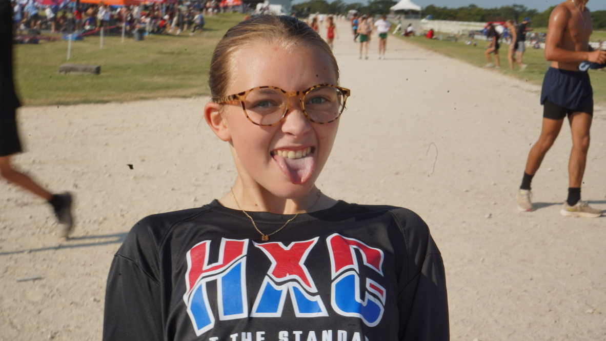

My name is Mak, obviously. I grew up in Kyle, Texas (south of Austin) I am a First-Year and a Film and Digital Media major. I love horror movies, especially ones with clowns (It, Terrifer, etc...) When I'm not watching movies or making them, I enjoy singing with my friends, rock climbing and finding niche spots to hangout at on campus.
